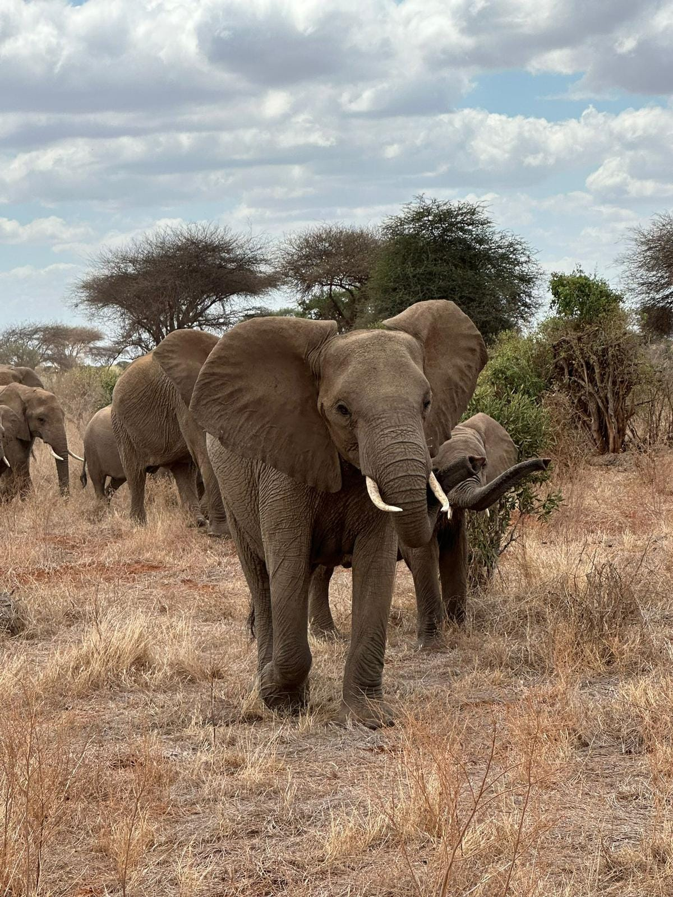

Safari di un giorno nel Parco Tsavo Est
Questo safari è un'immersione rapida ma intensa nella natura selvaggia. I visitatori possono aspettarsi di vedere leoni maestosi e una varietà di altre specie in uno dei parchi più antichi e grandi del Kenya.
Safari di 2 giorni presso Tsavo Est
Un escursione perfetta per godere delle meraviglie del nostro Parco Tsavo Est alla ricerca della fauna unica che contraddistingue questo posto .

Safari Blu Sardegna 2
Un'escursione in barca all'interno del Watamu Marine Park. Include snorkeling, avvistamento di delfini, relax su atolli sabbiosi e un pranzo a base di pesce.

Rovine di Gede
Un escursione presso le antiche rovine arabe di Gede abitate da deliziose scimmiette.

Spiaggia Dorata e Marafa
Esploreremo e toccheremo con mano la sabbia ricca di pirite che rende questo posto unico per poi ammirare le stupende formazioni rocciose di Marafa.

Spiaggia Dorata, Isola di Robson e Marafa
Un tour completo che copre la spiaggia di sabbia dorata, l'esotica Isola di Robson e le drammatiche formazioni geologiche di Marafa (Hell's Kitchen), con un aperitivo al tramonto.

Safari privato di 3 giorni Tsavo Est e Taita
Questo viaggio esclusivo combina l'emozione del Tsavo Est con la tranquillità del Taita Hills. I pernottamenti al Satao Camp e Saltlick offrono comfort e viste spettacolari.

Safari di gruppo 3 giorni e 2 notti Tsavo Est e Amboseli
Esplora la diversità di due parchi famosi in un unico viaggio. Il Voi Safari Lodge e il Kibo Safari Camp sono le basi per notti indimenticabili nel cuore della savana.

Safari privato di 4 giorni Tsavo Est, Taita e Amboseli
Un tour completo che offre una panoramica dei paesaggi e della fauna selvatica del Kenya. Con pernottamenti in lodge selezionati, è l'esperienza definitiva per gli amanti della natura.

Urban Safari al Nairobi National Park
Un'opzione unica per coloro che desiderano un assaggio di safari senza allontanarsi troppo dalla capitale. Perfetto per chi ha poco tempo ma non vuole perdere l'opportunità di vedere la fauna selvatica.